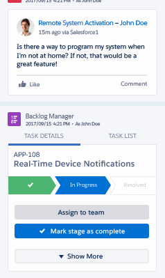

<div class="row monitor-height add-custom-components">
  <div class="col-lg-12 monitor-height">
    <div class="row monitor-height">
      <hotspots-container>
        <wizard name="monitor" on-finish="finishedWizard()">
          <wz-step>
            <div class="step step-0">

            </div>
          </wz-step>
          <wz-step>
            <div class="step step-1">
              
              <div class="drop-box" ng-class="{active: !customComponent.dropped}" data-drop="true" jqyoui-droppable="{index: 1 , onDrop:'next'}"></div>
              
            </div>
          </wz-step>
          <wz-step success="true">
            <div class="step success">
              <li-center>
                <p>
                  
                </p>
                <h2>Success!</h2>
                <p>
                    This Customer 360 app is coming together quite nicely! Did you know it can work on any device?
                </p>
                <p>
                  <a ui-sref="customize-a-page-layout" class="btn btn-rounded active">Continue</a>
                </p>
              </li-center>
            </div>
          </wz-step>
        </wizard>
      </hotspots-container>
    </div>
  </div>
</div>
